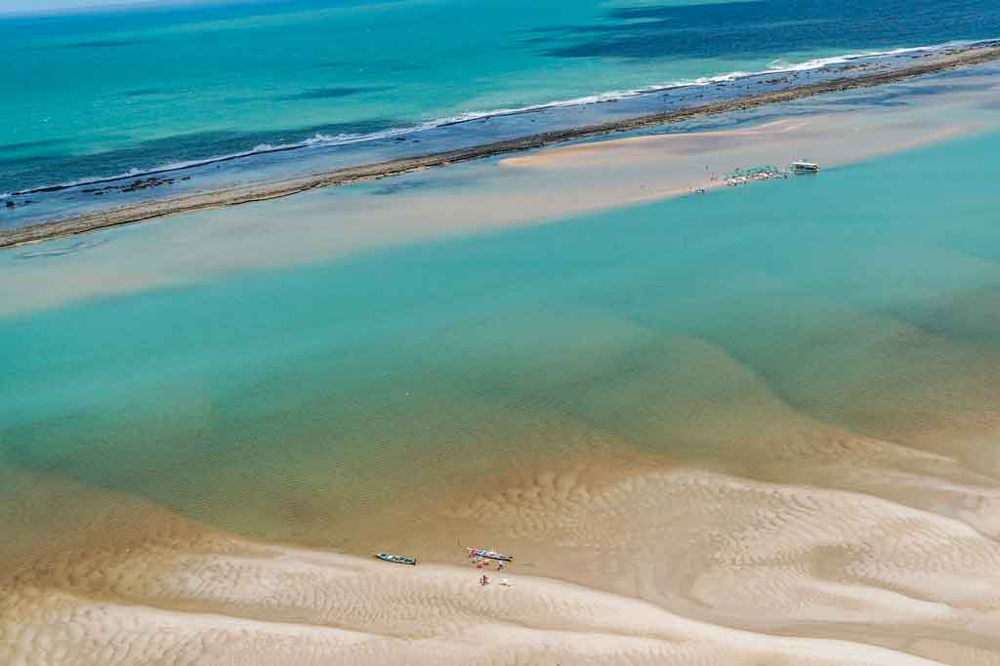

Agora para quem gosta de movimento e de muitas pessoas em volta, tanto turistas quanto moradores locais, a praia do Gunga é o destino!
Com muitos quiosques e bares ao redor da orla, é bem comum encontrar alguns pontos com som alto e pessoas dançando ao redor.
Por conta da grande movimentação também é possível encontrar feirinhas de artesanato onde os turistas podem aproveitar e garantir lembranças da cidade.
A Praia do Gunga está na lista das mais famosas do litoral de Alagoas e uma das mais bonitas do Brasil. E não é para menos, já que sua beleza torna-se incomparável ao apreciarmos o encontro das águas da Lagoa do Roteiro com o Oceano Atlântico, além de suas falésias, laguna, coqueiros e areia branquinha.